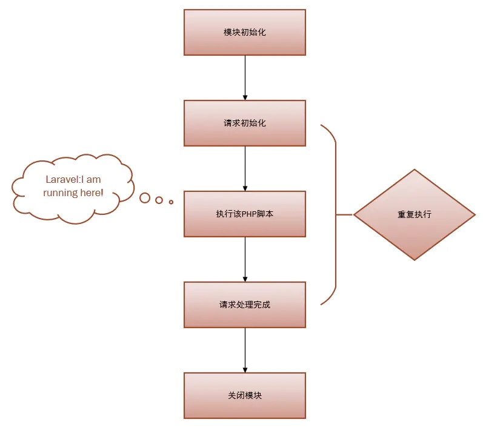
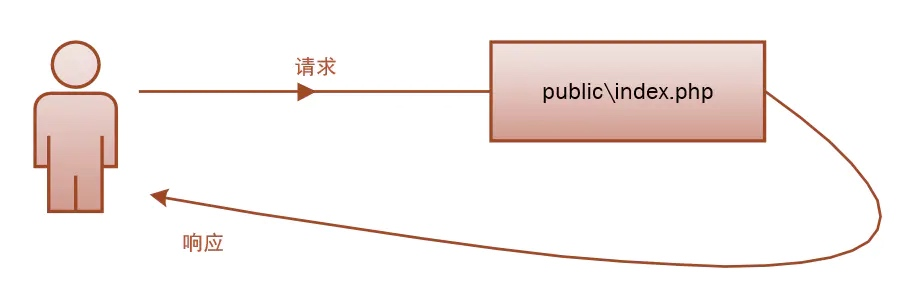
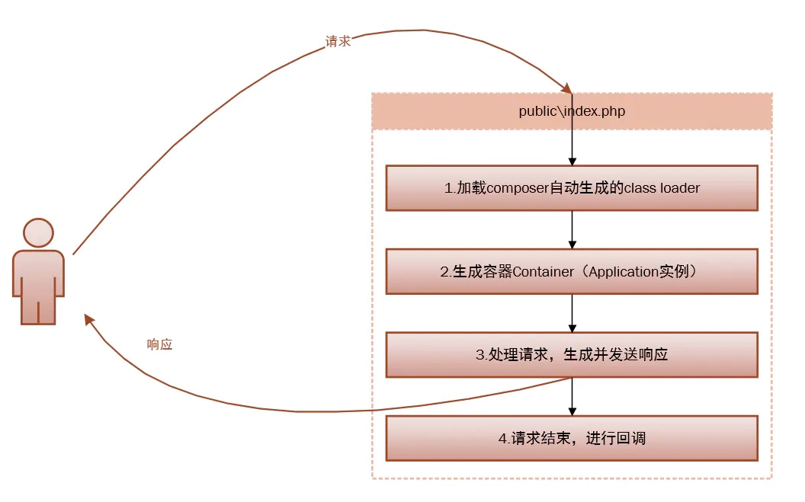
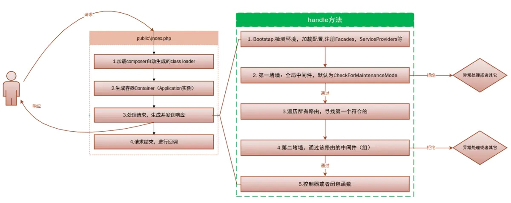

laravel的生命周期
世间万物皆有生命周期，当我们使用任何工具时都需要理解它的工作原理，那么用起来就会得心应手，应用开发也是如此。理解了它的原理，那么使用起来就会游刃有余。
在了解 Laravel 的生命周期前，我们先回顾一下PHP 的生命周期。
PHP 的生命周期
PHP 的运行模式
PHP两种运行模式是WEB模式、CLI模式。
- 当我们在终端敲入php这个命令的时候，使用的是CLI模式。
- 当使用Nginx或者别web服务器作为宿主处理一个到来的请求时,使用的是WEB模式。
生命周期
当我们请求一个.php文件时,PHP为了完成这次请求，会发生5个阶段的生命周期切换:
- 模块初始化（MINIT），即调用
php.ini中指明的扩展的初始化函数进行初始化工作，如mysql扩展。 - 请求初始化（RINIT），即初始化为执行本次脚本所需要的变量名称和变量值内容的符号表，如
$_SESSION变量。 - 执行该
PHP脚本。 - 请求处理完成(Request Shutdown)，按顺序调用各个模块的
RSHUTDOWN方法，对每个变量调用unset函数，如unset $_SESSION变量。 - 关闭模块(Module Shutdown) ， PHP调用每个扩展的
MSHUTDOWN方法，这是各个模块最后一次释放内存的机会。这意味着没有下一个请求了。
WEB模式和CLI（命令行）模式很相似，区别是：
- CLI 模式会在每次脚本执行经历完整的5个周期，因为你脚本执行完不会有下一个请求；
- WEB模式为了应对并发，可能采用多线程，因此生命周期1和5有可能只执行一次，下次请求到来时重复
2-4的生命周期，这样就节省了系统模块初始化所带来的开销。
可以看出PHP生命周期是很对称的。说了这么多，就是为了定位Laravel运行在哪里，没错，Laravel仅仅运行在第三个阶段：

作用
理解这些，你就可以优化你的 Laravel 代码，可以更加深入的了解 Laravel 的singleton（单例）。至少你知道了，每一次请求结束，PHP 的变量都会 unset，Laravel 的 singleton 只是在某一次请求过程中的singleton；你在 Laravel 中的静态变量也不能在多个请求之间共享，因为每一次请求结束都会 unset。理解这些概念，是写高质量代码的第一步，也是最关键的一步。因此记住，PHP是一种脚本语言，所有的变量只会在这一次请求中生效，下次请求之时已被重置，而不像Java静态变量拥有全局作用。
Laravel 的生命周期
概述
Laravel 的生命周期从public\index.php开始，从public\index.php结束。

下面是 public\index.php的全部源码,更具体来说可以分为四步：
1. require __DIR__.'/../bootstrap/autoload.php'; |
以下是四步详细的解释是：
- composer自动加载需要的类。文件载入composer生成的自动加载设置，包括所有你 composer require的依赖。
- 生成容器Container，Application实例，并向容器注册核心组件（HttpKernel，ConsoleKernel ，ExceptionHandler）（对应代码2，容器很重要，后面详细讲解）。
- 处理请求，生成并发送响应（对应代码3，毫不夸张的说，你99%的代码都运行在这个小小的handle 方法里面）。
- 请求结束，进行回调（对应代码4，还记得可终止中间件吗？没错，就是在这里回调的）。

我们不妨在详细一点：
第一步：注册加载composer自动生成的class loader
就是加载初始化第三方依赖。
第二步：生成容器 Container
并向容器注册核心组件，是从 bootstrap/app.php 脚本获取 Laravel 应用实例，
第三步：这一步是重点，处理请求，并生成发送响应。
请求被发送到 HTTP 内核或 Console 内核，这取决于进入应用的请求类型。
取决于是通过浏览器请求还是通过控制台请求。这里我们主要是通过浏览器请求。
HTTP内核的标志性方法handle处理的逻辑相当简单：获取一个Request，返回一个Response，把该内核想象作一个代表整个应用的大黑盒子，输入HTTP请求，返回HTTP响应。
首先 Bootstrap 检测环境，加载 bootstrapper数组中的一些配置
HTTP 内核继承自 Illuminate\Foundation\Http\Kernel 类，该类定义了一个 bootstrappers 数组，这个数组中的类在请求被执行前运行，这些 bootstrappers 配置了错误处理、日志、检测应用环境以及其它在请求被处理前需要执行的任务。
protected $bootstrappers = [ |
注意顺序：
Facades先于ServiceProviders，Facades也是重点，后面说，这里简单提一下，注册Facades就是注册config\app.php中的aliases数组，你使用的很多类，如Auth，Cache，DB等等都是Facades；而ServiceProviders的register方法永远先于boot方法执行，以免产生boot方法依赖某个实例而该实例还未注册的现象。
HTTP 内核还定义了一系列所有请求在处理前需要经过的 HTTP 中间件，这些中间件处理 HTTP 会话的读写、判断应用是否处于维护模式、验证 CSRF 令牌等等。
第一堵墙，全局中间件，默认为 CheckForMaintenanceMode
在Laravel基础的服务启动之后，就要把请求传递给路由了。路由器将会分发请求到路由或控制器，同时运行所有路由指定的中间件。
传递方式
传递给路由是通过 Pipeline（管道）来传递的，但是Pipeline有一堵墙，在传递给路由之前所有请求都要经过，这堵墙定义在app\Http\Kernel.php中的$middleware数组中，没错就是中间件，默认只有一个CheckForMaintenanceMode中间件，用来检测你的网站是否暂时关闭。这是一个全局中间件，所有请求都要经过，你也可以添加自己的全局中间件。
然后遍历所有注册的路由，找到最先符合的第一个路由
然后遍历所有注册的路由，找到最先符合的第一个路由，
第二堵墙，通过该路由的中间件（组）
经过该路由中间件，进入到控制器或者闭包函数，执行你的具体逻辑代码。
所以，当请求到达你写的代码之前，Laravel已经做了大量工作，请求也经过了千难万险，那些不符合或者恶意的的请求已被Laravel隔离在外。

上代码解析
public/index.php文件是所有对Laravel应用程序的请求的入口点。而所有的请求都是经由你的 Web 服务器（Apache/Nginx）通过配置引导到这个文件。index.php文件不包含太多的代码，却是加载框架的起点- 加载
Composer生成定义的自动加载器 - 从
bootstrap/app.php脚本检索应用实例- 首先根据环境配置，读取不同的env配置
- 其次将常用的接口类单例注入到容器中
- 注入
Http\Kernelhttp内核 - 注入
Console\Kernel控制器内核 - 注入
Debug\ExceptionHandler
- 注入
- 加载
- 从容器中解析
Http\Kernel- 定义了请求之前运行的
bootstrappers数组，这个数组在实际请求之前完成这些内容：配置错误处理、配置日志记录、检测应用程序环境、以及执行其他需要完成的任务 - 定义了所有请求被应用处理之前必须经过的中间价列表。包括http会话的读写、确定应用程序是否处于维护模式、验证
csrf令牌等 - handle方法：接收
Request并返回Response。可将内核当成黑盒，给他http请求，返回http响应
- 定义了请求之前运行的
- 控制器内核服务提供器
- 应用程序的所有服务提供器都在
config/app.php配置。 - 服务提供器负责引导所有框架的各种组件，如数据库、队列、验证和路由组件
- 应用程序的所有服务提供器都在
- 分配请求
- 一旦引导了应用程序且注册了所有等服务提供器，请求就会被转交给路由器来进行调度。路由器将请求发送到路由或控制器或任何运行于路由的特定中间件。